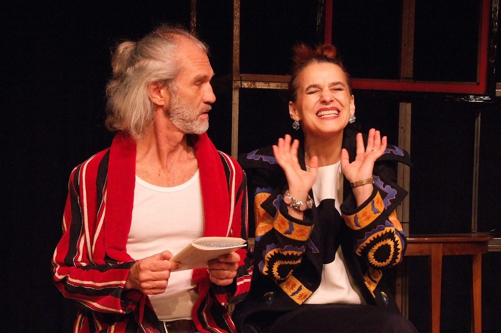
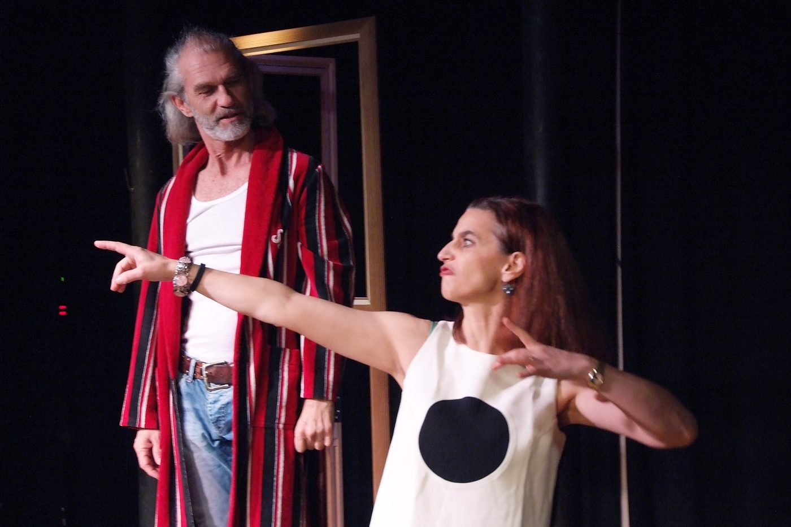
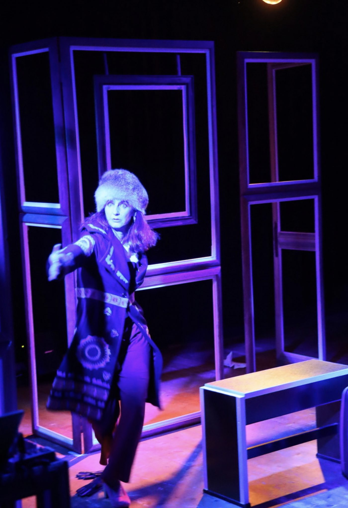
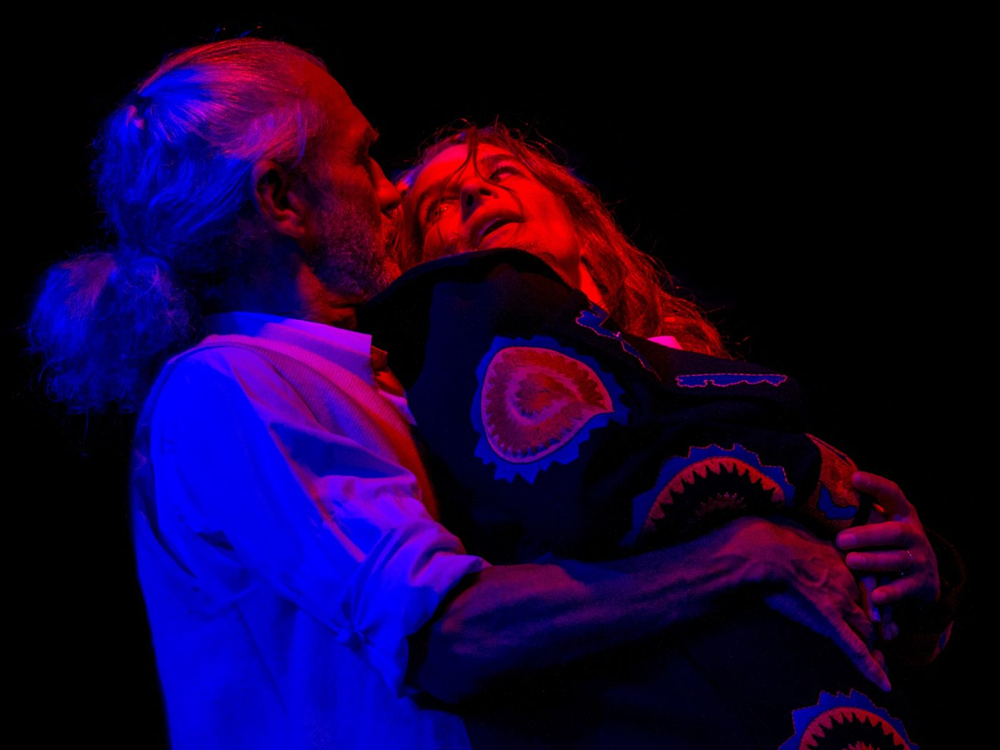
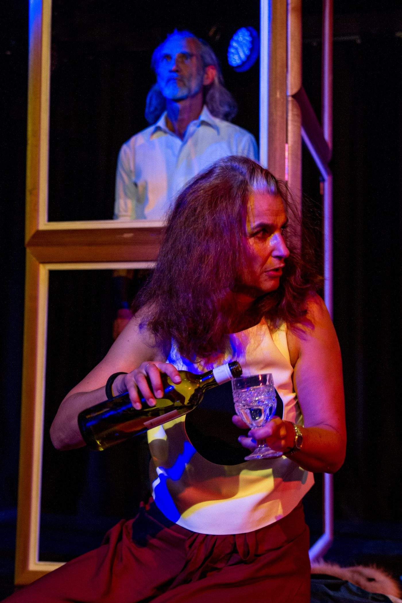
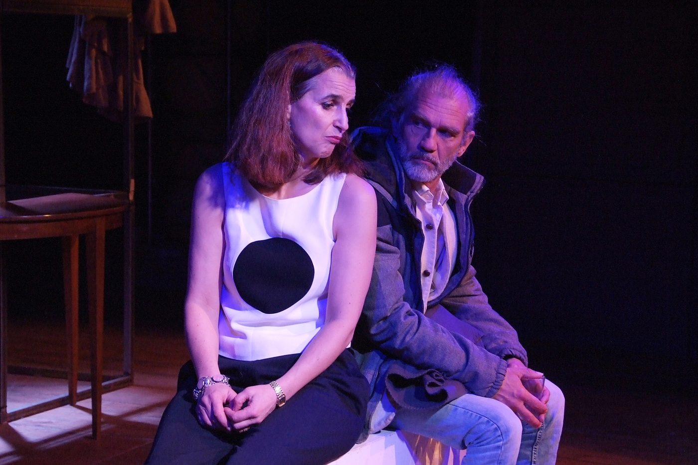
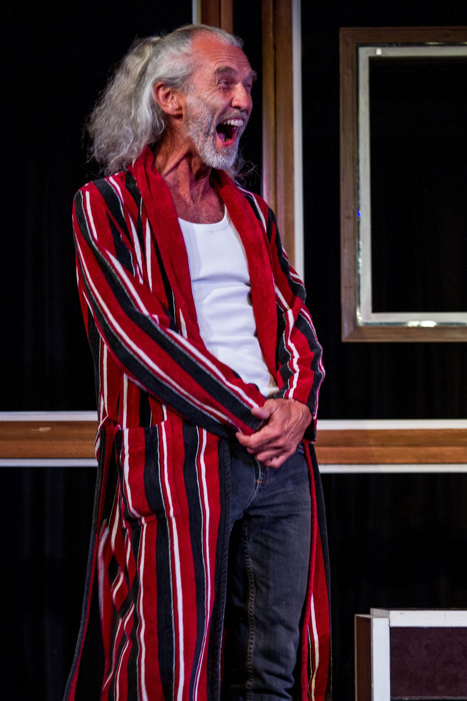

Die schnelle Komödie beschäftigt sich auf unterhaltsame und tiefgründige Art mit Themen der heutigen Gesellschaft: Neue Armut, sich ändernde Privatheit und Geschlechterrollen.
Georg Zanetti, ein ehemaliger Taxifahrer, wohnt in einer mittelgrossen Schweizer Stadt. Der mürrische Eigenbrötler hat eine kleine Einzimmer-Wohnung von seinen Eltern geerbt, Nähe Bahnhof mit Sicht auf die Altstadt. Die malerische Lage zahlt sich aus, Georg vermietet seine Wohnung regelmässig bei Airbnb. Er schläft dann jeweils bei seinem Sohn auf dem Sofa. Weil er bei «Uber» als selbständiger Fahrer tätig war, hat er nach einem Unfall kein Anrecht auf Arbeitslosengeld und findet mit seinen 55 Jahren keine Anstellung mehr. Georg liebt die Einsamkeit, aber wenn er seine Wohnung zwei Nächte pro Woche vermieten kann, ist sein Leben finanziert.
Miriam Buholzer ist eine temperamentvolle Frau um die fünfzig und hat sich gerade von ihrem Mann getrennt. Sie hatte die selbstherrlichen Sprüche und Ausschweifungen des wohlhabenden Geschäftsmanns satt und will sich nun im Leben neu orientieren. Ihre Freundin hat ihr empfohlen, am «Rainbow Spirit Festival» einen Kurs zu besuchen, um sich zu festigen und Hilfe für ihr selbstbestimmtes Leben zu finden. So begegnet sie Georg, bei dem sie für drei Nächte die Wohnung gebucht hat.
Es treffen zwei Menschen aufeinander, die unterschiedlicher nicht sein könnten: der Individualist und Underdog, der zeitlebens für seine Existenz kämpfen musste, und die lebensfreudige Miriam aus dem Establishment, die auf der Suche nach einem eigenen «Ich» ist. Miriam, für die ein Leben ohne Handy nicht vorstellbar ist, und Georg, der sich keines leisten kann. Zwei Temperamente prallen aufeinander, zwei Weltanschauungen, zwei Solisten, die ihre Gesinnung, ihre Denkweisen bis aufs Äusserste verteidigen. Let the bubbles burst!
Zugleich nimmt das Stück «Airbnb» den Einfluss der neuen Medien auf unsere Privatheit unter die Lupe. Zwei getrennte Daseinssphären, eine private Hinter- und eine öffentliche Vorderbühne: Dieses Konzept strukturierte lange unser gesellschaftliches Zusammenleben. Doch die Grenzen zwischen privater und öffentlicher Sphäre verschwimmen, wir sind davon direkt betroffen, ob wir wollen oder nicht. Georg vermietet seine private Wohnung. Hat Miriam das Recht, Fotos davon auf Facebook oder Instagram zu veröffentlichen, nur weil sie dafür bezahlt hat? Was, wenn dadurch Georgs Existenz gefährdet wird? Darf sie die Möbel umstellen, Bilder abhängen? Solche und andere brenzlige Situationen sorgen für zusätzlichen Zündstoff im aktuellen Zwei-Personen-Kammerspiel.
«Airbnb» ist ein geballtes Stück Leben, das mit schnellen Dialogen, überraschenden Wendungen und viel Humor der heutigen Gesellschaft einen Spiegel vorhält und in gewohnter N!NA-Manier unterhaltsame neunzig Minuten verspricht.
«… Mit komödiantischer, körperbetonter Spiellust jonglieren Franziska Senn und Reto Baumgartner die witzigen Dialoge und ernten mit sprachlichen Kabinettstückchen und grotesken Wendepunkten im Geschehen viele Lacher, die mitunter auch im Hals stecken bleiben …» Solothurner Zeitung
- Spiel
- Franziska Senn, Reto Baumgartner
- Stück / Regie
- Ueli Blum
- Ausstattung
- Valérie Soland
- Choreographie
- Mariana Coviello
- Licht
- Martin Brun
- Oeil extérieur
- Eva Batz-Deschler
- Grafik
- Meret Blum






